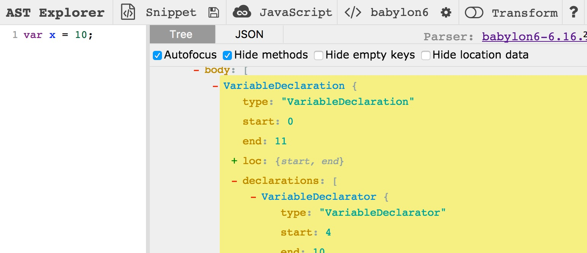

World Bank Tech Salon
Code as data
A quick story
Computer languages evolve slowly and painfully
15 years to finish Perl 6
7 years for Python 3 to overtake 2
But something is changing
Upgrading JavaScript
Literally impossible
How can JavaScript evolve if it requires everyone to upgrade their browsers?
Babel
JavaScript that parses JavaScript and transforms it into other JavaScript
JavaScript 6 → JavaScript 5
JavaScript 3 → JavaScript 6
Google Translate, for programming languages
A parser, for programming languages
This matters for everyone, let me explain why
We think 'Data' is CSV, XML, dat, GeoJSON, GeoTIFF, Excel, RData
We think 'code' interprets 'data'
But code increasingly is 'data'
GitHub is 14 terabytes of code data
Ex: 'Operation Rosehub' at Google for mass-patching vulnerabilities
code → rosehub → vulnerabilities → fixes
Ex: 'TruffleHog', a hacking tool that finds secrets in code
code → trufflehog → vulnerabilities
Ex: 'documentation.js', a project I work on that auto-writes documentation
code → documentation.js → documentation
Ex: 'Flow', a tool that automatically finds bugs in code
code → Flow → predictions
An explosion of tools that uses understanding and scale to accelerate technology
Reimaging code as input - as data, not just functionality
GitHub as a resource for research, not just resources
